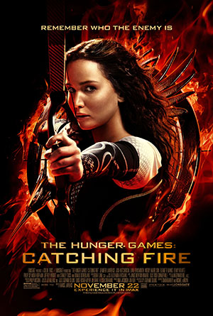

The Hunger Games Trilogy
Originally published first in 2008, The Hunger Games were adpated into a film series four years later after revolutionizing the young-adult dystopian genre.
Author
Born in Hartford, Conneticut, Suzanne Collins is an American author and screenwriter with over 80 published novels. Collins gained inspiration from her father, a military historian, to write the Hunger Games, which would become an international best-seller. Collins spent most of her childhood moving around the United States because of her father's job, and earned an M.F.A in dramatic writing from NYU in 1989. She spent the following years writing screenplays for youth-targeted television, and then published her first book in 2003, Gregor the Overlander. This book covers "adult" topics such as genocide and biological warfare, which sparked Collins's interest to write a YA dystopian novel.
Visit Suzanne Collin's website HERE
Summary
In the remains of North America, the Capitol of Panem hosts the annual Hunger Games as a reminder of the nation's rebellious past. Each of the 12 districts must provide one girl and one boy tribute in a fight to the death. The winner of the games is promised riches and a life of peace. After her younger sister is called as the tribute for District 12, Katniss Everdeen volunteers to take her place. In the arena she must survive against all odds, and is faced with Capitol-produced challenges, natural disasters, and the other tributes.
Books
- The Hunger Games
- Catching Fire
- Mockingjay
"My name is Katniss Everdeen. Why am I not dead? I should be dead."
Awards
The Hunger Games
- #1 New York Times Bestseller
- #1 USA Today Bestseller
- Wall Street Journal Bestseller
- Publishers Weekly Bestseller
Catching Fire
- A People Magazine (Top 10) Best Books of 2009
- 2010 Indies Choice Award Winner--Young Adult
- A Booklist Editor's Choice, 2009
- #1 YALSA's Teens' Top Ten, 2010
Mockingjay
- CCBC Choices 2011
- Barnes & Noble Best Teen Books of 2010
- 2011 Locus Award Finalist
- Amazon Best Books of 2010: #3 on Customer Favorites List
Movie Adaptations
The first of the Hunger Games movie adaptations was released in 2012, and was produced by Lions Gate. The adaptation of Catching Fire came the following year. With the plot of Mockingjay being intricate and detailed, Collins and the directors of the films agreed that it would be best to divide the book into two movies. Mockingjay: Part 1 was released in 2014, and Mockingjay: Part 2 was released in 2015. The total series of films earned a box office of $2.970 billion.

Filming Locations
- Hunger Games
- Asheville, NC
- Barnardsville, NC
- Charlotte, NC
- Catching Fire
- Atlanta, GA
- O'ahu, HI
- Waimea Valley, HI
- Mockingjay: Part 1
- Atlanta, GA
- Newnan, GA
- Bellwood Quarry, GA
- Mockingjay: Part 2
- Atlanta, GA
- Paris, France
- Berlin, Germany
Main Characters
Soundtrack
The Hunger Games films include a variety of different songs that compose the films' soundtracks, but the most popular were "Safe and Sound" by Taylor Swift, "Everybody Wants to Rule the World" by Lorde, and "The Hanging Tree" by James Newton Howard Ft. Jennifer Lawrence. When one analyzes the use of the songs in the films, there are some remarkable discoveries.
"Safe and Sound" is used as the end credit song for the first film. The credits roll after Katniss and Peeta return to District 12 and believe that the worst of it is over, and that they are safe from any danger of the games now that they have ended. Specific lyrics from the song can be directly related to events in the movie.
"When all those shadows almost killed your light" can be connected to the night before the games start and Peeta states that he doesn't want the Capitol to change him. Katniss asks him what he means and he says, "I don't know. Turn me into something I'm not. I just don't want to be another piece in their game, y'know?" Peeta is desperate to not change because of the Games, and these lyrics reflect that. The shadows symbolize the Capitol, and the light represents Peeta.
"Don't you dare look out your window, darling, everything's on fire / The war outside our door keeps raging on" is an example of foreshadowing of the next film, "Catching Fire." Katniss describes her relationship with Peeta after the games as complicated and that she can barely look him in the eye. But throughout Catching Fire, we see her true feelings towards him. The urging tone of the lyrics show that Katniss is desparate to keep Peeta safe from the conflict that she is invloved in. In the first film, it was Katniss's idea to potentially sacrifice both of them. She doesn't want Peeta to face any of the consequences of her actions. By telling him to not look out the window because of the fire, Katniss believes that she is able to protect Peeta from the threats of the Capitol. It also connects to the presence of fire in the arena. One tribute is killed because a fire she sets gives off her location, Rue is killed when she is setting fires to distract the Careers, and Katniss has to escape the fire set by the gamemakers which leads her to the other tributes. The second part of the line demonstrates that the conflict between the districts and Capitol is still happening.
"Everybody Wants to Rule the World" is featured on the soundtrack for Catching Fire. When listening to the song, there is a vast difference between this song and the song used for the first film's credits. This difference marks a turning point in the series and how Katniss is committed to leading the rebellion after the events that took place in the Quarter Quell. This song was originally relased in 1985 by Tears for Fears, but in 2013, Lorde produced a cover of it that matched what the directors wanted for the movie. Despite this song not being originally written for the film, there are some great connections between the lyrics and the plot.
"Welcome to your life / There's no turning back / Even while we sleep / We will find you" is almost a direct message to Katniss from the Capitol. She cannot undo her actions and there is no going back after the act of rebllion against the Capitol. Once the 74th Hunger Games came to an end, Katniss believed that she was done with them, and that she no longer would be involved. But as an act back at Katniss, the Capitol organizes the Quarter Quell to only have past winners of the games. This was planned as a way for the Capitol to end Katniss, but not directly. The lyrics mention that even while they sleep, they will find you. This shows that no matter what Katniss does, she cannot outrun the Capitol and its power.
"Acting on your best behavior / Turn your back on mother nature" connects back to how people are always telling her to act. When Katniss and Peeta go on the Victor's Tour and end back to the Capitol, Effie mentions how she needs to be polite and smile at everyone. She must appeal to the other people and act on her best behavior so her actions don't seem like they were acts of defiance. When she visits every district, she must follow the speech cards and be very careful with her choice of words. But Katniss does not keep up this act in the Quarter Quell. Instead of giving in and letting the game be the cause of her death, she destroys the arena. She always mentioned that she felt safe in the woods near her house in District 12, but these feelings do not stand tue after facing the dangers of the woods in the arena. She no longer feels the same as she does, almost like she is turning her back on mother nature. This line can also relate to the general stance of the Capitol and the Districts. The Capitol has a tight grip on the Districts to help prevent any sort of uprising, but the Districts soon rebel, and go against the life that they have known for years.
"The Hanging Tree" is the only song in all of the films that was sung by a character. In Mockingjay: Part 1, Katniss is traveling to different districts after she has accepted the role of being the rebllion's "Mockingjay." This is a crucial moment in the film because from the books we know that Katniss did not sign often, as it reminded her of her father, the two other times we saw her sing was when she was comforting Prim after a nightmare on the day of the reaping. We also see her sing to Rue just before she passes. The song she sings are very soothing and comforting. This is a huge shift to the lyrics of "The Hanging Tree."
"Are you, are you comin' to the tree / Where I told you to run, so we'd both be free?" at first appears to be talking about the singer telling their lover to runaway. But with the mention of the tree, that is not the case. The singer is telling their lover to meet them at the tree, so they could be free. In this case, the couple sees death as an escape to freedom. This is confirmed in the next stanza with the line, "Where necklace of hope, side by side with me?" The necklace of hope refers to the rope used to hang people.
"Strange things did happen here, no stranger would it be" shows that the people are used to things like this happening. It at first was something that was very uncommon and seen as strange. But now it is not uncommon for people of the District to have thoughts like these. There is no physical tree that is shown in the movie, but it very well is a symbol for the dying hope of the people and how some would rather be dead than continue to live like this.

Contact us
Email: fanbase@email.com
Telephone: 123-456-7890